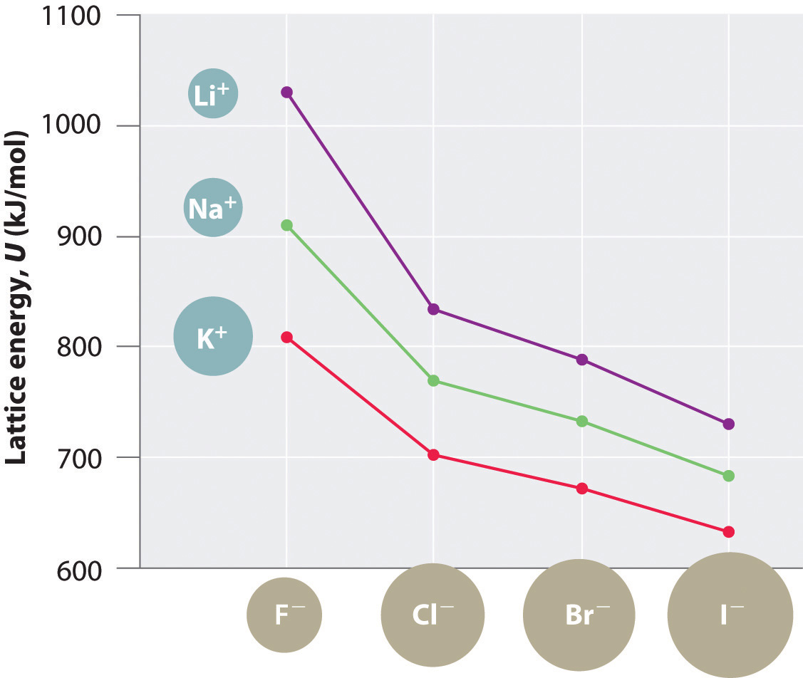
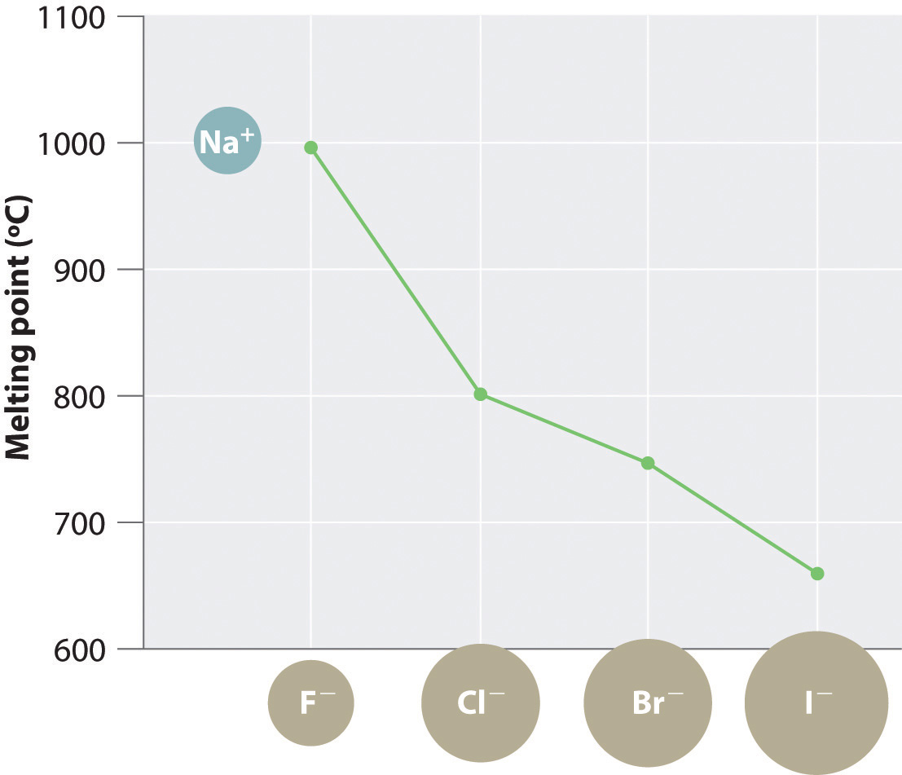
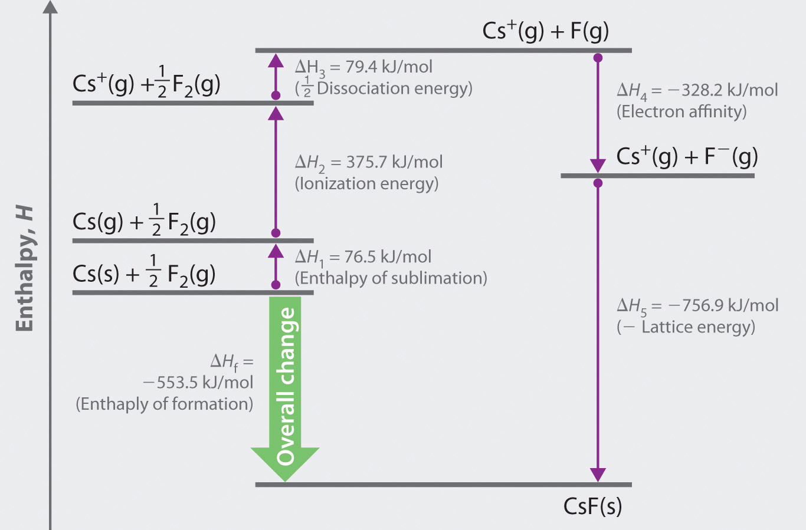
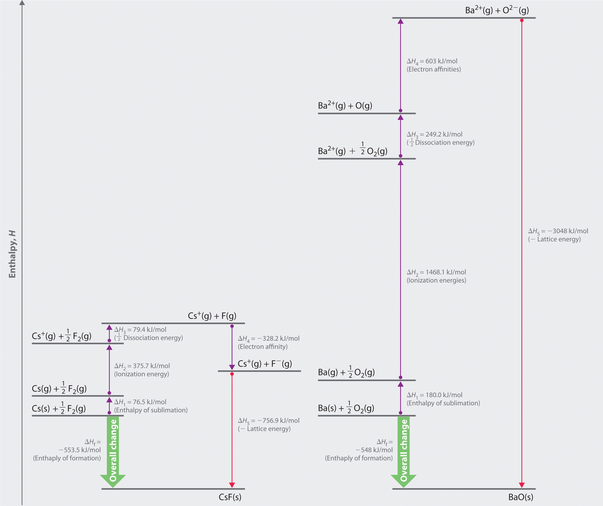

Recall from Chapter 2 "Molecules, Ions, and Chemical Formulas" that the reaction of a metal with a nonmetal usually produces an ionic compound; that is, electrons are transferred from the metal (the reductant) to the nonmetal (the oxidant). Ionic compounds are usually rigid, brittle, crystalline substances with flat surfaces that intersect at characteristic angles. They are not easily deformed, and they melt at relatively high temperatures. NaCl, for example, melts at 801°C. These properties result from the regular arrangement of the ions in the crystalline lattice and from the strong electrostatic attractive forces between ions with opposite charges.
While Equation 8.1 has demonstrated that the formation of ion pairs from isolated ions releases large amounts of energy, even more energy is released when these ion pairs condense to form an ordered three-dimensional array (Figure 7.8 "Definition of Ionic Radius"). In such an arrangement each cation in the lattice is surrounded by more than one anion (typically four, six, or eight) and vice versa, so it is more stable than a system consisting of separate pairs of ions, in which there is only one cation–anion interaction in each pair. Note that r0 may differ between the gas-phase dimer and the lattice.
An ionic lattice is more stable than a system consisting of separate ion pairs.
The lattice energy of nearly any ionic solid can be calculated rather accurately using a modified form of Equation 8.1:
Equation 8.4
U, which is always a positive number, represents the amount of energy required to dissociate 1 mol of an ionic solid into the gaseous ions. If we assume that ΔV = 0, then the lattice energy, U, is approximately equal to the change in enthalpy, ΔH (see Chapter 5 "Energy Changes in Chemical Reactions", Section 5.2 "Enthalpy"):
Equation 8.5
As before, Q1 and Q2 are the charges on the ions and r0 is the internuclear distance. We see from Equation 8.4 that lattice energy is directly related to the product of the ion charges and inversely related to the internuclear distance. The value of the constant k′ depends on the specific arrangement of ions in the solid lattice and their valence electron configurations, topics that will be discussed in more detail in Chapter 12 "Solids". Representative values for calculated lattice energies, which range from about 600 to 10,000 kJ/mol, are listed in Table 8.1 "Representative Calculated Lattice Energies". Energies of this magnitude can be decisive in determining the chemistry of the elements.
Table 8.1 Representative Calculated Lattice Energies
| Substance | U (kJ/mol) |
|---|---|
| NaI | 682 |
| CaI2 | 1971 |
| MgI2 | 2293 |
| NaOH | 887 |
| Na2O | 2481 |
| NaNO3 | 755 |
| Ca3(PO4)2 | 10,602 |
| CaCO3 | 2804 |
Source: Data from CRC Handbook of Chemistry and Physics (2004).
Because the lattice energy depends on the product of the charges of the ions, a salt having a metal cation with a +2 charge (M2+) and a nonmetal anion with a −2 charge (X2−) will have a lattice energy four times greater than one with M+ and X−, assuming the ions are of comparable size (and have similar internuclear distances). For example, the calculated value of U for NaF is 910 kJ/mol, whereas U for MgO (containing Mg2+ and O2− ions) is 3795 kJ/mol.
Because lattice energy is inversely related to the internuclear distance, it is also inversely proportional to the size of the ions. This effect is illustrated in Figure 8.2 "A Plot of Lattice Energy versus the Identity of the Halide for the Lithium, Sodium, and Potassium Halides", which shows that lattice energy decreases for the series LiX, NaX, and KX as the radius of X− increases. Because r0 in Equation 8.4 is the sum of the ionic radii of the cation and the anion (r0 = r+ + r−), r0 increases as the cation becomes larger in the series, so the magnitude of U decreases. A similar effect is seen when the anion becomes larger in a series of compounds with the same cation.

Figure 8.2 A Plot of Lattice Energy versus the Identity of the Halide for the Lithium, Sodium, and Potassium Halides
Because the ionic radii of the cations decrease in the order K+ > Na+ > Li+ for a given halide ion, the lattice energy decreases smoothly from Li+ to K+. Conversely, for a given alkali metal ion, the fluoride salt always has the highest lattice energy and the iodide salt the lowest.
Lattice energies are highest for substances with small, highly charged ions.
Arrange GaP, BaS, CaO, and RbCl in order of increasing lattice energy.
Given: four compounds
Asked for: order of increasing lattice energy
Strategy:
Using Equation 8.4, predict the order of the lattice energies based on the charges on the ions. For compounds with ions with the same charge, use the relative sizes of the ions to make this prediction.
Solution:
The compound GaP, which is used in semiconductor electronics, contains Ga3+ and P3− ions; the compound BaS contains Ba2+ and S2− ions; the compound CaO contains Ca2+ and O2− ions; and the compound RbCl has Rb+ and Cl− ions. We know from Equation 8.4 that lattice energy is directly proportional to the product of the ionic charges. Consequently, we expect RbCl, with a (−1)(+1) term in the numerator, to have the lowest lattice energy, and GaP, with a (+3)(−3) term, the highest. To decide whether BaS or CaO has the greater lattice energy, we need to consider the relative sizes of the ions because both compounds contain a +2 metal ion and a −2 chalcogenide ion. Because Ba2+ lies below Ca2+ in the periodic table, Ba2+ is larger than Ca2+. Similarly, S2− is larger than O2−. Because the cation and the anion in BaS are both larger than the corresponding ions in CaO, the internuclear distance is greater in BaS and its lattice energy will be lower than that of CaO. The order of increasing lattice energy is RbCl < BaS < CaO < GaP.
Exercise
Arrange InAs, KBr, LiCl, SrSe, and ZnS in order of decreasing lattice energy.
Answer: InAs > ZnS > SrSe > LiCl > KBr
The magnitude of the forces that hold an ionic substance together has a dramatic effect on many of its properties. The melting pointThe temperature at which the individual ions in a lattice or the individual molecules in a covalent compound have enough kinetic energy to overcome the attractive forces that hold them together in the solid., for example, is the temperature at which the individual ions have enough kinetic energy to overcome the attractive forces that hold them in place. At the melting point, the ions can move freely, and the substance becomes a liquid. Thus melting points vary with lattice energies for ionic substances that have similar structures. The melting points of the sodium halides (Figure 8.3 "A Plot of Melting Point versus the Identity of the Halide for the Sodium Halides"), for example, decrease smoothly from NaF to NaI, following the same trend as seen for their lattice energies (Figure 8.2 "A Plot of Lattice Energy versus the Identity of the Halide for the Lithium, Sodium, and Potassium Halides"). Similarly, the melting point of MgO is 2825°C, compared with 996°C for NaF, reflecting the higher lattice energies associated with higher charges on the ions. In fact, because of its high melting point, MgO is used as an electrical insulator in heating elements for electric stoves.
Figure 8.3 A Plot of Melting Point versus the Identity of the Halide for the Sodium Halides
The melting points follow the same trend as the magnitude of the lattice energies in Figure 8.2 "A Plot of Lattice Energy versus the Identity of the Halide for the Lithium, Sodium, and Potassium Halides".
The hardnessThe resistance of ionic materials to scratching or abrasion. of ionic materials—that is, their resistance to scratching or abrasion—is also related to their lattice energies. Hardness is directly related to how tightly the ions are held together electrostatically, which, as we saw, is also reflected in the lattice energy. As an example, MgO is harder than NaF, which is consistent with its higher lattice energy.
In addition to determining melting point and hardness, lattice energies affect the solubilities of ionic substances in water. In general, the higher the lattice energy, the less soluble a compound is in water. For example, the solubility of NaF in water at 25°C is 4.13 g/100 mL, but under the same conditions, the solubility of MgO is only 0.65 mg/100 mL, meaning that it is essentially insoluble.
High lattice energies lead to hard, insoluble compounds with high melting points.
In principle, lattice energies could be measured by combining gaseous cations and anions to form an ionic solid and then measuring the heat evolved. Unfortunately, measurable quantities of gaseous ions have never been obtained under conditions where heat flow can be measured. Instead, lattice energies are found using the experimentally determined enthalpy changes for other chemical processes, Hess’s law, and a thermochemical cycle called the Born–Haber cycleA thermochemical cycle that decribes the process in which an ionic solid is conceptually formed from its component elements in a stepwise manner., similar to those introduced in Chapter 5 "Energy Changes in Chemical Reactions". Developed by Max Born and Fritz Haber in 1919, the Born–Haber cycle describes a process in which an ionic solid is conceptually formed from its component elements in a stepwise manner.
Let’s use the Born–Haber cycle to determine the lattice energy of CsF(s). CsF is a nearly ideal ionic compound because Cs is the least electronegative element that is not radioactive and F is the most electronegative element. To construct a thermochemical cycle for the formation of CsF, we need to know its enthalpy of formation, ΔHf, which is defined by the following chemical reaction:
Equation 8.6
Because enthalpy is a state function, the overall ΔH for a series of reactions is the sum of the values of ΔH for the individual reactions. (For more information about state functions and Hess’s law, see Chapter 5 "Energy Changes in Chemical Reactions", Section 5.2 "Enthalpy".) We can therefore use a thermochemical cycle to determine the enthalpy change that accompanies the formation of solid CsF from the parent elements (not ions).
The Born–Haber cycle for calculating the lattice energy of cesium fluoride is shown in Figure 8.4 "The Born–Haber Cycle Illustrating the Enthalpy Changes Involved in the Formation of Solid Cesium Fluoride from Its Elements". This particular cycle consists of six reactions, Equation 8.6 plus the following five reactions:
Figure 8.4 The Born–Haber Cycle Illustrating the Enthalpy Changes Involved in the Formation of Solid Cesium Fluoride from Its Elements
Reaction 1
This equation describes the sublimationThe conversion of a solid directly to a gas (without an intervening liquid phase). of elemental cesium, the conversion of the solid directly to a gas. The accompanying enthalpy change is called the enthalpy of sublimation(ΔHsub)The enthalpy change that accompanies the conversion of a solid directly to a gas. (Table 8.2 "Selected Enthalpies of Sublimation at 298 K") and is always positive because energy is required to sublime a solid.
Table 8.2 Selected Enthalpies of Sublimation at 298 K
| Substance | ΔHsub (kJ/mol) |
|---|---|
| Li | 159.3 |
| Na | 107.5 |
| K | 89.0 |
| Rb | 80.9 |
| Cs | 76.5 |
| Be | 324.0 |
| Mg | 147.1 |
| Ca | 177.8 |
| Sr | 164.4 |
| Ba | 180.0 |
Source: Data from CRC Handbook of Chemistry and Physics (2004).
Reaction 2
This equation describes the ionization of cesium, so the enthalpy change is the first ionization energy of cesium. Recall from Chapter 7 "The Periodic Table and Periodic Trends" that energy is needed to ionize any neutral atom. Hence, regardless of the compound, the enthalpy change for this portion of the Born–Haber cycle is always positive.
Reaction 3
This equation describes the dissociation of fluorine molecules into fluorine atoms, where D is the energy required for dissociation to occur (Table 8.3 "Selected Bond Dissociation Enthalpies at 298 K"). We need to dissociate only mol of F2(g) molecules to obtain 1 mol of F(g) atoms. The ΔH for this reaction, too, is always positive because energy is required to dissociate any stable diatomic molecule into the component atoms.
Table 8.3 Selected Bond Dissociation Enthalpies at 298 K
| Substance | D (kJ/mol) |
|---|---|
| H2(g) | 436.0 |
| N2(g) | 945.3 |
| O2(g) | 498.4 |
| F2(g) | 158.8 |
| Cl2(g) | 242.6 |
| Br2(g) | 192.8 |
| I2(g) | 151.1 |
Source: Data from CRC Handbook of Chemistry and Physics (2004).
Reaction 4
This equation describes the formation of a gaseous fluoride ion from a fluorine atom; the enthalpy change is the electron affinity of fluorine. Recall from Chapter 7 "The Periodic Table and Periodic Trends" that electron affinities can be positive, negative, or zero. In this case, ΔH is negative because of the highly negative electron affinity of fluorine.
Reaction 5
This equation describes the formation of the ionic solid from the gaseous ions. Because Reaction 5 is the reverse of the equation used to define lattice energy and U is defined to be a positive number, ΔH5 is always negative, as it should be in a step that forms bonds.
If the enthalpy of formation of CsF from the elements is known (ΔHf = −553.5 kJ/mol at 298 K), then the thermochemical cycle shown in Figure 8.4 "The Born–Haber Cycle Illustrating the Enthalpy Changes Involved in the Formation of Solid Cesium Fluoride from Its Elements" has only one unknown, the quantity ΔH5 = −U. From Hess’s law, we can write
Equation 8.7
ΔHf = ΔH1 + ΔH2 + ΔH3 + ΔH4 + ΔH5We can rearrange Equation 8.7 to give
Equation 8.8
−ΔH5 = ΔH1 + ΔH2 + ΔH3 + ΔH4 − ΔHfSubstituting for the individual ΔHs, we obtain
Substituting the appropriate values into this equation gives
Equation 8.9
U = 76.5 kJ/mol + 375.7 kJ/mol + 79.4 kJ/mol + (−328.2 kJ/mole) − (−553.5 kJ/mol) = 756.9 kJ/molU is larger in magnitude than any of the other quantities in Equation 8.9. The process we have used to arrive at this value is summarized in Table 8.4 "Summary of Reactions in the Born–Haber Cycle for the Formation of CsF(s)".
Table 8.4 Summary of Reactions in the Born–Haber Cycle for the Formation of CsF(s)
| Reaction | Enthalpy Change (kJ/mol) | |
|---|---|---|
| (1) | Cs(s) → Cs(g) | ΔHsub = 76.5 |
| (2) | Cs(g) → Cs + (g) + e− | I1 = 375.7 |
| (3) | ½F2(g) → F(g) | ½D = 79.4 |
| (4) | F(g) + e− → F−(g) | EA = −328.2 |
| (5) | Cs + (g) + F−(g) → CsF(s) | −U = −756.9 |
| Cs(s) + ½F2(g) → CsF(s) | ΔHf = −553.5 |
Equation 8.7 may be used as a tool for predicting which ionic compounds are likely to form from particular elements. As we have noted, ΔH1 (ΔHsub), ΔH2 (I), and ΔH3 (D) are always positive numbers, and ΔH2 can be quite large. In contrast, ΔH4 (EA) is comparatively small and can be positive, negative, or zero. Thus the first three terms in Equation 8.7 make the formation of an ionic substance energetically unfavorable, and the fourth term contributes little either way. The formation of an ionic compound will be exothermic (ΔHf < 0) if and only if ΔH5 (−U) is a large negative number. This means that lattice energy is the most important factor in determining the stability of an ionic compound. Another example is the formation of BaO:
Equation 8.10
whose Born–Haber cycle is compared with that for the formation of CsF in Figure 8.5 "Comparison of the Enthalpy Changes Involved in the Formation of Solid CsF and BaO from Their Elements".
Figure 8.5 Comparison of the Enthalpy Changes Involved in the Formation of Solid CsF and BaO from Their Elements
The lattice energy of BaO, with a dipositive cation and a dinegative anion, dominates the Born–Haber cycle.
Reaction 1
More than twice as much energy is required to sublime barium metal (180.0 kJ/mol) as is required to sublime cesium (76.5 kJ/mol).
Reaction 2
Nearly four times the energy is needed to form Ba2+ ions (I1 = 502.9 kJ/mol, I2 = 965.2 kJ/mol, I1 + I2 = 1468.1 kJ/mol) as Cs+ ions (I1 = 375.7 kJ/mol).
Reaction 3
Because the bond energy of O2(g) is 498.4 kJ/mol compared with 158.8 kJ/mol for F2(g), more than three times the energy is needed to form oxygen atoms from O2 molecules as is required to form fluorine atoms from F2.
Reaction 4
Forming gaseous oxide (O2−) ions is energetically unfavorable. Even though adding one electron to an oxygen atom is exothermic (EA1 = −141 kJ/mol), adding a second electron to an O−(g) ion is energetically unfavorable (EA2 = +744 kJ/mol)—so much so that the overall cost of forming O2−(g) from O(g) is energetically prohibitive (EA1 + EA2 = +603 kJ/mol).
If the first four terms in the Born–Haber cycle are all substantially more positive for BaO than for CsF, why does BaO even form? The answer is the formation of the ionic solid from the gaseous ions (Reaction 5):
Reaction 5
Remember from Equation 8.4 that lattice energies are directly proportional to the product of the charges on the ions and inversely proportional to the internuclear distance. Although the internuclear distances are not significantly different for BaO and CsF (275 and 300 pm, respectively), the larger ionic charges in BaO produce a much higher lattice energy. Substituting values for BaO (ΔHf = −548.0 kJ/mol) into the equation and solving for U gives
Thus U for BaO is slightly more than four times greater than U for CsF. The extra energy released when BaO forms from its ions more than compensates for the additional energy required to form Ba2+(g) and O2−(g) ions from Ba(s) and
If the formation of ionic lattices containing multiply charged ions is so energetically favorable, why does CsF contain Cs+ and F− ions rather than Cs2+ and F2− ions? If we assume that U for a Cs2+F2− salt would be approximately the same as U for BaO, the formation of a lattice containing Cs2+ and F2− ions would release 2291 kJ/mol (3048 kJ/mol − 756.9 kJ/mol) more energy than one containing Cs+ and F− ions. To form the Cs2+ ion from Cs+, however, would require removing a 5p electron from a filled inner shell, which calls for a great deal of energy: I2 = 2234.4 kJ/mol for Cs. Furthermore, forming an F2− ion is expected to be even more energetically unfavorable than forming an O2− ion. Not only is an electron being added to an already negatively charged ion, but because the F− ion has a filled 2p subshell, the added electron would have to occupy an empty high-energy 3s orbital. Cesium fluoride, therefore, is not Cs2+F2− because the energy cost of forming the doubly charged ions would be greater than the additional lattice energy that would be gained.
Lattice energy is usually the most important energy factor in determining the stability of an ionic compound.
Use data from Figure 7.13 "Electron Affinities (in kJ/mol) of the ", Table 7.5 "Successive Ionization Energies (in kJ/mol) for the Elements in the Third Row of the Periodic Table", Table 8.2 "Selected Enthalpies of Sublimation at 298 K", Table 8.3 "Selected Bond Dissociation Enthalpies at 298 K", and Chapter 25 "Appendix A: Standard Thermodynamic Quantities for Chemical Substances at 25°C" to calculate the lattice energy of MgH2.
Given: chemical compound and data from figures and tables
Asked for: lattice energy
Strategy:
A Write a series of stepwise reactions for forming MgH2 from its elements via the gaseous ions.
B Use Hess’s law and data from the specified figures and tables to calculate the lattice energy.
Solution:
A Hess’s law allows us to use a thermochemical cycle (the Born–Haber cycle) to calculate the lattice energy for a given compound. We begin by writing reactions in which we form the component ions from the elements in a stepwise manner and then assemble the ionic solid:
B Table 7.5 "Successive Ionization Energies (in kJ/mol) for the Elements in the Third Row of the Periodic Table" lists the first and second ionization energies for the period 3 elements [I1(Mg) = 737.7 kJ/mol, I2(Mg) = 1450.7 kJ/mol]. First electron affinities for all elements are given in Figure 7.13 "Electron Affinities (in kJ/mol) of the " [EA(H) = −72.8 kJ/mol]. Table 8.2 "Selected Enthalpies of Sublimation at 298 K" lists selected enthalpies of sublimation [ΔHsub(Mg) = 147.1 kJ/mol]. Table 8.3 "Selected Bond Dissociation Enthalpies at 298 K" lists selected bond dissociation energies [D(H2) = 436.0 kJ/mol]. Enthalpies of formation (ΔHf = −75.3 kJ/mol for MgH2) are listed in Chapter 25 "Appendix A: Standard Thermodynamic Quantities for Chemical Substances at 25°C". From Hess’s law, ΔHf is equal to the sum of the enthalpy changes for Reactions 1–5:
For MgH2, U = 2701.2 kJ/mol. Once again, lattice energy provides the driving force for forming this compound because ΔH1, ΔH2, ΔH3 > 0. When solving this type of problem, be sure to write the chemical equation for each step and double-check that the enthalpy value used for each step has the correct sign for the reaction in the direction it is written.
Exercise
Use data from Figure 7.11 "First Ionization Energies of the ", Figure 7.13 "Electron Affinities (in kJ/mol) of the ", Table 8.2 "Selected Enthalpies of Sublimation at 298 K", Table 8.3 "Selected Bond Dissociation Enthalpies at 298 K", and Chapter 25 "Appendix A: Standard Thermodynamic Quantities for Chemical Substances at 25°C" to calculate the lattice energy of Li2O. Remember that the second electron affinity for oxygen [O−(g) + e− → O2−(g)] is positive (+744 kJ/mol; see Equation 7.13).
Answer: 2809 kJ/mol
Ionic compounds have strong electrostatic attractions between oppositely charged ions in a regular array. The lattice energy (U) of an ionic substance is defined as the energy required to dissociate the solid into gaseous ions; U can be calculated from the charges on the ions, the arrangement of the ions in the solid, and the internuclear distance. Because U depends on the product of the ionic charges, substances with di- or tripositive cations and/or di- or trinegative anions tend to have higher lattice energies than their singly charged counterparts. Higher lattice energies typically result in higher melting points and increased hardness because more thermal energy is needed to overcome the forces that hold the ions together. Lattice energies cannot be measured directly but are obtained from a thermochemical cycle called the Born–Haber cycle, in which Hess’s law is used to calculate the lattice energy from the measured enthalpy of formation of the ionic compound, along with other thermochemical data. The Born–Haber cycle can be used to predict which ionic compounds are likely to form. Sublimation, the conversion of a solid directly to a gas, has an accompanying enthalpy change called the enthalpy of sublimation.
If a great deal of energy is required to form gaseous ions, why do ionic compounds form at all?
What are the general physical characteristics of ionic compounds?
Ionic compounds consist of crystalline lattices rather than discrete ion pairs. Why?
What factors affect the magnitude of the lattice energy of an ionic compound? What is the relationship between ionic size and lattice energy?
Which would have the larger lattice energy—an ionic compound consisting of a large cation and a large anion or one consisting of a large anion and a small cation? Explain your answer and any assumptions you made.
How would the lattice energy of an ionic compound consisting of a monovalent cation and a divalent anion compare with the lattice energy of an ionic compound containing a monovalent cation and a monovalent anion, if the internuclear distance was the same in both compounds? Explain your answer.
Which would have the larger lattice energy—CrCl2 or CrCl3—assuming similar arrangements of ions in the lattice? Explain your answer.
Which cation in each pair would be expected to form a chloride salt with the larger lattice energy, assuming similar arrangements of ions in the lattice? Explain your reasoning.
Which cation in each pair would be expected to form an oxide with the higher melting point, assuming similar arrangements of ions in the lattice? Explain your reasoning.
How can a thermochemical cycle be used to determine lattice energies? Which steps in such a cycle require an input of energy?
Although NaOH and CH3OH have similar formulas and molecular masses, the compounds have radically different properties. One has a high melting point, and the other is a liquid at room temperature. Which compound is which and why?
Arrange SrO, PbS, and PrI3 in order of decreasing lattice energy.
Compare BaO and MgO with respect to each of the following properties.
Use a thermochemical cycle and data from Figure 7.13 "Electron Affinities (in kJ/mol) of the ", Table 7.5 "Successive Ionization Energies (in kJ/mol) for the Elements in the Third Row of the Periodic Table", Table 8.2 "Selected Enthalpies of Sublimation at 298 K", Table 8.3 "Selected Bond Dissociation Enthalpies at 298 K", and Chapter 25 "Appendix A: Standard Thermodynamic Quantities for Chemical Substances at 25°C" to calculate the lattice energy (U) of magnesium chloride (MgCl2).
Would you expect the formation of SrO from its component elements to be exothermic or endothermic? Why or why not? How does the valence electron configuration of the component elements help you determine this?
Using the information in Problem 4 and Problem 5, predict whether CaO or MgCl2 will have the higher melting point.
Use a thermochemical cycle and data from Table 8.2 "Selected Enthalpies of Sublimation at 298 K", Table 8.3 "Selected Bond Dissociation Enthalpies at 298 K", and Chapter 25 "Appendix A: Standard Thermodynamic Quantities for Chemical Substances at 25°C" to calculate the lattice energy of calcium oxide. The first and second ionization energies of calcium are 589.8 kJ/mol and 1145.4 kJ/mol.
Lattice energy is directly proportional to the product of the ionic charges and inversely proportional to the internuclear distance. Therefore, PrI3 > SrO > PbS.
U = 2522.2 kJ/mol
Despite the fact that Mg2+ is smaller than Ca2+, the higher charge of O2− versus Cl− gives CaO a larger lattice energy than MgCl2. Consequently, we expect CaO to have the higher melting point.